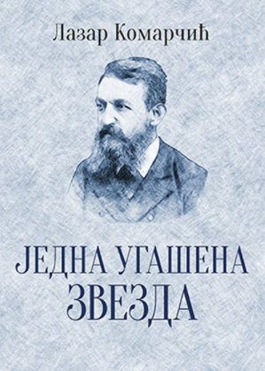
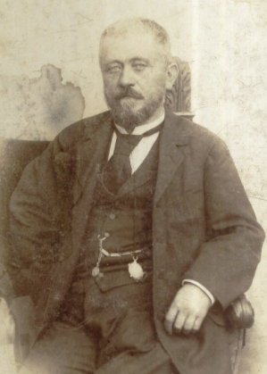

Лазар Комарчић
Једна угашена звезда из 1902. године, аутора Лазара Комарчића, први је роман научнофантастичног жанра на нашем поднебљу. Роман је писан у првом лицу.
Младић заинтересован за астрономију главни је лик дела Једна угашена звезда. Након изузетно занимљивог предавања о астрономији, коме је присуствао у Грађанској Касини, он одлази да спава. У сну се сусреће са духом Пјера Симона Лапласа, познатог француског научника. Лаплас га води на путовање космосом, успут му приповедајући и појашњавајући астрономске тајне.
Лаплас и главни јунак, на свом путу, прво посећују месец, а затим и звезду Мизар. Највише се задржавају на планети Аруџа-Дари, сунчевог система Амадураме, где се сусрећу са остацима веома технолошки развијене цивилизације, која је одавно изумрла. Они тада срећу и дух царскога библиотекара, који им сетно говори о лепоти и савршенству тог друштва на свом врхунцу.
Једна угашена звезда, реиздање из 2017. године
Роман карактерише едукативна и просветитељска црта, где писац показује своје познавање астрономије и астрономских открића тадашњег периода. Дело прожимају многи подаци, описи сазвежђа и звезда - научна знања (од којих су нека данас и застарела).
Дело Једна угашена звезда, на тренутке, залази и у метафизичке мисли и дискусије. То се, понајвише, види у излагању Лапласовог духа, када он говори о немогућности човека да појми постојање божанског, па и критикује неке од научника који због тога одбацују постојање Бога.
Комарчић спретно користи дати моменат, те кроз роман даје и критику друштва и привидног поштовања јавног морала и Божје правде. Осврће се на злобу, пакост, ненавист, прохтев за осветом и животињство људске расе, па овом критиком и завршава главни део романа.
Лазар Комарчић (1839-1909), родом из села Глог, у околини Прибоја, један је од првих писаца из области научне фантастике код Срба. Осим писања, за живота је радио и као кројач, зидар, учитељ, кафеџија, новинар, уредник… У Црној Бари, малом месту покрај Шапца, управља кафаном и започиње веома успешну каријеру писца. Комарчић објављује 11 књига, превасходно романа. Живи и ствара у периоду када то раде и Жил Верн и Х.Џ. Велс. Друштво љубитеља научне фантастике из Београда носи његово име.
Лазар Комарчић
приредио Богдан Лазовић